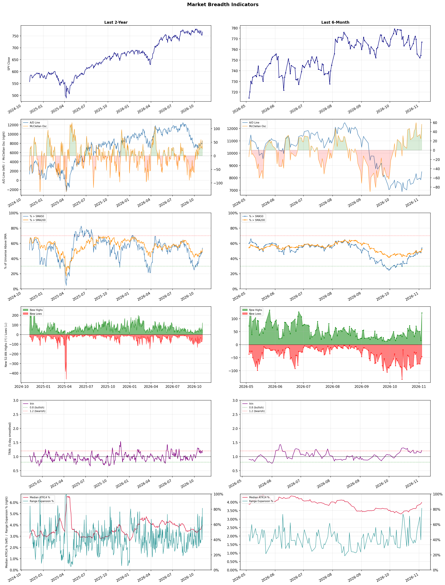

A daily market breadth and sector rotation report for active investors
| Item | Read |
|---|---|
| Regime | Selective Risk-On |
| Risk posture | Selective |
| Universe | 1,313 stocks tracked · 122 new 52-week highs · 30 active swing setups |
| Breadth | 53.8% of tracked stocks are above SMA50 — neutral range, new highs exceed new lows (122 vs 46) |
| Leadership | Apparel Manufacturing, Health Information Services, and Discount Stores |
| Weakest groups | Uranium, Other Industrial Metals & Mining, and Semiconductor Equipment & Materials |
Use this report to prioritize research and chart review; validate entries, stops, liquidity, earnings, and risk before acting.
| Item | Read |
|---|---|
| Primary read | Selective Risk-On regime with Selective risk posture. |
| Research queue | FIGS, VFC, PVH, LEVI, ZGN |
| Leadership focus | Apparel Manufacturing, Health Information Services, and Discount Stores |
| Caution list | Uranium, Other Industrial Metals & Mining, and Semiconductor Equipment & Materials |
| Review prompt | Check extension risk, chart location, fundamentals, valuation, and earnings before using any research row. |
| Item | Read |
|---|---|
| Primary read | 1 active risk warnings; use screen output as watchlist input only. |
| Bullish screens | IBN, VSXY, LFST, CROX, PRCH |
| Bearish screens | IONS, FRMI, TBLA, MBLY, AESI |
| Alerts / levels | Automated trigger, stop, ATR, liquidity, reward/risk, and event-risk levels are pending future enrichment. |
| Review prompt | Open the linked chart, define trigger and invalidation, then check liquidity and event risk independently. |
Risk Posture: Selective — screen backdrop supports selective research in leading industries
Metric context: McClellan below -50 = elevated selling pressure; below -100 = washout territory. Range Expansion = share of stocks with daily range above their 20-day average. Signal Density = share of tracked names appearing in signal screens.
| Breadth Date | % > SMA50 | % > SMA200 | New Highs | New Lows | McClellan | Median Range | Avg Range | Median ATR14 | Range Expansion | Signal Density |
|---|---|---|---|---|---|---|---|---|---|---|
| 2026-11-04 | 53.8% | 51.9% | 122 | 46 | 56.0 | 4.8% | 5.9% | 4.0% | 81.3% | 4.0% |

Prior comparison date: November 3, 2026
| Metric | Prior | Current | Change |
|---|---|---|---|
| Regime | Neutral | Selective Risk-On | changed |
| Risk Posture | Defensive | Selective | changed |
| % > SMA50 | 47.8% | 53.8% | +6.1 pts |
| % > SMA200 | 48.9% | 51.9% | +3.0 pts |
| New Highs | 16 | 122 | +106 |
| New Lows | 53 | 46 | +7 |
Top-10 industries entering: Apparel Retail and Medical Care Facilities. Top-10 industries leaving: Beverages - Non-Alcoholic and Drug Manufacturers - General. New multi-signal long setups: AHR, AMC, ARQT, DIS, DLR, ELAN, EW, GM. New multi-signal short setups: AESI, CCJ.
| Status | Tickers | Read |
|---|---|---|
| Added | AESI, AHR, AMC, ARQT, CCJ, DIS, DLR, ELAN | New technical screen matches vs prior report. |
| Removed | ABR, ACHC, AEE, AEP, ALKS, ARR, AZTA, BLMN | No longer present in today's technical screen matches. |
| Still Active | ADTN, CROX, FRMI, IBN, IONS, MBLY, USAR, VSXY | Appeared in both current and prior reports. |
| Promoted | IBN | Model Screen Score improved by at least 15 points. |
| Downgraded | none | Model Screen Score declined by at least 15 points. |
| Direction | Industry | ETF | Prior Rank | Current Rank | Days | Rank Change |
|---|---|---|---|---|---|---|
| Rose | Restaurants | N/A | 83 | 7 | 42 | +76 |
| Rose | Travel Services | N/A | 84 | 18 | 42 | +66 |
| Rose | Apparel Manufacturing | N/A | 65 | 1 | 42 | +64 |
| Rose | Leisure | N/A | 85 | 25 | 42 | +60 |
| Rose | REIT - Retail | N/A | 78 | 24 | 42 | +54 |
Bull: The rising relative strength of the restaurant industry can be attributed to strong earnings performances from major players like McDonald's and Chipotle, as highlighted in the recent headlines, which indicate that robust financial results can overshadow concerns about U.S. sales dips. Additionally, the positive sentiment around restaurant stocks, as noted in the Yahoo Finance article, suggests that investors are identifying opportunities within the sector despite recent volatility, further supported by analysts' optimism regarding potential earnings beats for companies like Shake Shack and Papa John's. This combination of strong earnings and favorable market sentiment positions the restaurant industry favorably compared to other sectors.
Bear: While the recent earnings beats from McDonald's and Chipotle may suggest strength, they mask underlying issues such as declining U.S. sales and broader economic pressures that could dampen consumer spending in the restaurant sector. Additionally, the optimism reflected in the headlines may be overly reliant on short-term performance, ignoring potential long-term headwinds such as rising labor costs, inflation, and changing consumer preferences towards healthier dining options or at-home meals, which could significantly impact profitability across the industry.
Verdict: The restaurant industry's rising strength is primarily driven by strong earnings from major players like McDonald's and Chipotle, which have bolstered investor confidence despite concerns over U.S. sales dips. However, key risks remain, including potential long-term pressures from rising labor costs, inflation, and shifting consumer preferences towards healthier or at-home dining options, which could undermine profitability in the sector. Investors should remain cautious and monitor these economic indicators while considering opportunities within the industry.
Sources: Google News
Bull: The Travel Services sector is experiencing a bullish trend due to a robust recovery in consumer demand for travel, as evidenced by Expedia Group's 11% surge amid a sector-wide rally, indicating heightened investor confidence. Additionally, the endorsement from Morgan Stanley as the preferred online travel pick and the focus on innovative technologies like AI transforming the travel industry highlight the sector's potential for growth and efficiency, further driving interest and investment in travel-related stocks and ETFs.
Bear: While the recent surge in Expedia Group's stock and the overall bullish sentiment in the Travel Services sector may suggest a robust recovery, it is crucial to consider the potential for a downturn as consumer behavior shifts and economic uncertainties loom. Rising inflation, potential interest rate hikes, and geopolitical tensions could dampen discretionary spending on travel, leading to a decline in demand. Additionally, the reliance on AI and technology may not be a panacea for the industry's challenges, as implementation costs and the risk of technological disruptions could offset any perceived efficiency gains.
Verdict: The Travel Services sector's bullish trend is primarily driven by a strong rebound in consumer demand for travel, bolstered by positive investor sentiment and endorsements from financial analysts like Morgan Stanley. However, key risks remain, particularly from rising inflation and potential interest rate hikes, which could curtail discretionary spending on travel and dampen the sector's recovery. Investors should closely monitor economic indicators and consumer behavior to gauge the sustainability of this growth.
Sources: Google News
Bull: The Apparel Manufacturing sector is experiencing a rising relative strength primarily due to increasing global demand for apparel, as highlighted by articles discussing the best apparel stocks for future investment, indicating investor confidence in growth potential. Additionally, the ongoing expansion of companies like Gildan Activewear into international markets suggests a strategic move to capitalize on emerging opportunities, while concerns over tariffs and geopolitical tensions, such as the Iran war, could drive manufacturers to diversify their supply chains, ultimately enhancing resilience and profitability in the sector.
Bear: While the apparel manufacturing sector may currently exhibit rising relative strength, this trend could be misleading, as it is heavily influenced by short-term investor sentiment rather than sustainable growth fundamentals. The looming threats of tariffs and geopolitical tensions, particularly the Iran war, pose significant risks to supply chains and cost structures, potentially eroding margins and profitability. Additionally, the industry's reliance on global demand may be overly optimistic, especially as consumer spending habits shift and economic uncertainties loom, which could dampen future growth prospects.
Verdict: The apparel manufacturing sector's rising relative strength is primarily driven by increasing global demand and strategic expansions by companies like Gildan Activewear into emerging markets, reflecting investor confidence in future growth. However, key risks include potential disruptions from tariffs and geopolitical tensions, particularly related to the Iran war, which could negatively impact supply chains and profit margins, warranting cautious monitoring of these external factors.
Sources: Google News
Bull: The Leisure industry is experiencing a rise in relative strength due to a robust recovery in travel and tourism, as highlighted by multiple sources emphasizing growth potential despite industry pressures. Key drivers include increased consumer demand for travel experiences and recreation, as evidenced by articles from Yahoo Finance and The Motley Fool, which identify specific stocks poised for growth and suggest a positive outlook for the sector through 2026. Additionally, the resilience of leisure and recreation services amid economic challenges indicates a strong consumer preference for discretionary spending in these areas, further supporting the bullish sentiment.
Bear: While the leisure industry may show rising relative strength, this trend could be misleading as it often reflects short-term consumer enthusiasm rather than sustainable growth. Economic uncertainties, including inflation and potential recessionary pressures, may dampen discretionary spending on travel and recreation, leading to a contraction in demand. Furthermore, the industry's reliance on a few key markets and the ongoing challenges of labor shortages and rising operational costs could undermine the optimistic projections highlighted by bullish analysts.
Verdict: The leisure industry's rise is fundamentally driven by a strong recovery in travel and tourism, fueled by heightened consumer demand for experiences as pandemic-related restrictions ease. However, key risks include potential economic headwinds such as inflation and recessionary pressures, which could curtail discretionary spending and negatively impact growth projections. Investors should remain cautious and monitor economic indicators that could signal a shift in consumer behavior.
Sources: Google News
Bull: The rising relative strength of the Retail REIT sector can be attributed to strong leasing momentum, as highlighted in the recent coverage of Kite Realty Group Trust, which indicates a robust demand for retail spaces despite broader economic uncertainties. Additionally, the positive outlook from sources like Morningstar and Yahoo Finance suggests that low supply and favorable leasing conditions are driving investor confidence, positioning Retail REITs to capitalize on recovering consumer spending and increasing foot traffic in physical retail locations.
Bear: While the rising relative strength of Retail REITs may seem promising, it is essential to consider the broader economic context, including potential recessionary pressures and changing consumer behaviors favoring e-commerce over brick-and-mortar shopping. Additionally, the strong leasing momentum reported by Kite Realty Group Trust may not be sustainable, as high inflation and interest rates could lead to reduced consumer spending, ultimately impacting the long-term viability of retail spaces and the profitability of these REITs. Furthermore, the current optimism may be overinflated, as it fails to account for the potential for increased vacancies and declining rental rates in the face of shifting market dynamics.
Verdict: The Retail REIT sector's rising relative strength is primarily driven by strong leasing momentum and positive investor sentiment, fueled by recovering consumer spending and limited supply of retail spaces. However, the key risk lies in the potential for recessionary pressures and shifting consumer preferences towards e-commerce, which could undermine long-term demand for brick-and-mortar retail and lead to increased vacancies and declining rental rates. Investors should closely monitor economic indicators and consumer behavior trends to assess the sustainability of this momentum.
Sources: Google News
| Direction | Industry | ETF | Prior Rank | Current Rank | Days | Rank Change |
|---|---|---|---|---|---|---|
| Fell | Semiconductor Equipment & Materials | SOXX | 5 | 85 | 35 | -80 |
| Fell | Computer Hardware | XLK | 3 | 83 | 35 | -80 |
| Fell | Electronic Components | XLK | 6 | 81 | 28 | -75 |
| Fell | Semiconductors | SOXX | 4 | 78 | 28 | -74 |
| Fell | Copper | COPX | 7 | 79 | 35 | -72 |
Bear: While the current low valuations of semiconductor stocks compared to the S&P 500 may seem attractive, the underlying issues driving the "crisis of confidence" are more profound and persistent. Concerns about slowing demand due to macroeconomic headwinds, such as rising interest rates and geopolitical tensions, could lead to a prolonged downturn in the sector, undermining any potential for a quick rebound. Additionally, the cyclical nature of the semiconductor industry suggests that even if valuations appear cheap, the risk of further declines in earnings and market sentiment remains high, making a bullish outlook overly optimistic.
Bull: The Semiconductor Equipment & Materials sector is currently experiencing a decline in relative strength primarily due to a "crisis of confidence" among investors, as highlighted in the MarketWatch article. This sentiment is exacerbated by a recent sell-off in semiconductor stocks, prompting analysts to suggest that while valuations are attractive compared to the broader S&P 500, the market remains cautious about future demand and growth prospects in the industry, as noted in multiple headlines. However, this presents a compelling buying opportunity for investors looking to capitalize on potential rebounds in the sector.
Verdict: The semiconductor equipment and materials sector is currently facing a decline primarily due to investor uncertainty stemming from macroeconomic pressures, including rising interest rates and geopolitical tensions, which are dampening demand forecasts. While attractive valuations may present a buying opportunity, the key risk lies in the cyclical nature of the industry, where prolonged downturns could lead to further earnings declines and sustained negative sentiment, making caution advisable for potential investors.
Sources: Google News
Bear: While the bull analyst points to a shift in investor sentiment towards AI and quantum computing as a positive trend, this overlooks the fundamental challenges facing the Computer Hardware sector, particularly in the context of declining demand and oversupply issues. The consistent sell-off of chip stocks by hedge funds indicates a lack of confidence in the profitability and growth prospects of traditional hardware companies, suggesting that the sector may struggle to recover as investors prioritize more innovative and potentially lucrative areas over established hardware players. Additionally, the hype surrounding AI and quantum computing may not translate into immediate financial performance, leaving hardware stocks vulnerable to further declines amid a challenging macroeconomic environment.
Bull: The recent decline in relative strength for the Computer Hardware sector can be attributed to a shift in investor sentiment towards more promising areas such as AI and quantum computing, as highlighted in multiple headlines. For instance, the focus on "The Best AI Stocks to Buy" and "7 Best Quantum Computing Stocks for 2026" suggests that investors are reallocating capital away from traditional hardware stocks, particularly in light of hedge funds dumping chip stocks amid concerns over AI hardware performance. This pivot towards emerging technologies reflects a broader macro trend where investors are favoring sectors perceived to have higher growth potential.
Verdict: The Computer Hardware sector's decline is primarily driven by a significant shift in investor focus towards emerging technologies like AI and quantum computing, which are perceived to offer higher growth potential compared to traditional hardware. However, the key risk lies in the fundamental challenges of declining demand and oversupply in the hardware market, which could hinder recovery and further depress stock performance if the anticipated growth in AI and quantum computing fails to materialize in the near term. Investors should closely monitor demand trends and the financial performance of hardware companies to gauge potential recovery signals.
Sources: Google News
Bear: While the bull analyst attributes the relative weakness in the Electronic Components industry to sector rotation and broader market dynamics, the reality is that fundamental challenges persist within the industry itself. Companies like Amphenol and Corning may have posted strong earnings, but this could be more reflective of short-term operational efficiencies rather than sustainable growth, especially as supply chain issues and rising material costs continue to pressure margins. Furthermore, the increasing focus on high-growth segments like robotics and memory stocks suggests a fundamental shift in investor preference away from traditional electronic components, indicating a potential long-term decline in demand for these products as the market evolves.
Bull: The relative weakness in the Electronic Components industry can be attributed to broader market dynamics and sector rotation, as highlighted by the focus on robotics and memory stocks in recent headlines. While companies like Amphenol and Corning reported strong earnings, the industry's overall performance may be overshadowed by the rising interest in high-growth segments like robotics, as noted by The Motley Fool, and the hot trading environment for memory stocks, which suggests a shift in investor sentiment towards more specialized tech sectors. Additionally, the government's clearance of multiple electronics component projects indicates potential growth, but the immediate market reaction may reflect caution as investors reassess the broader economic landscape and potential supply chain challenges.
Verdict: The Electronic Components industry's decline is primarily driven by a fundamental shift in investor preference towards high-growth sectors like robotics and memory, which indicates a potential long-term decrease in demand for traditional components. This trend is compounded by ongoing supply chain challenges and rising material costs that pressure margins, highlighting the key risk that short-term operational efficiencies may not translate into sustainable growth. Investors should closely monitor these dynamics and consider reallocating resources to sectors with stronger growth prospects.
Sources: Google News
Bear: While the bull thesis points to robust AI demand and undervaluation relative to the S&P 500, the recent decline in the semiconductor sector's relative strength suggests deeper underlying issues that may not be resolved by short-term market sentiment. The semiconductor industry is facing significant headwinds, including supply chain disruptions, geopolitical tensions impacting trade, and potential overcapacity as companies ramp up production to meet anticipated demand, which could lead to price erosion and margin compression. Furthermore, the reliance on AI demand may be overly optimistic, as the market could be underestimating the cyclical nature of semiconductor sales and the risk of a broader economic slowdown that could dampen spending on technology.
Bull: The recent decline in the relative strength of the semiconductor industry can be attributed to a broader market sell-off, which has led to increased volatility and uncertainty among investors. Despite this, robust demand for AI-related technologies, as highlighted in multiple headlines, suggests that the fundamentals remain strong, with Q3 sales showing significant growth driven by AI applications. This presents a compelling opportunity for investors to capitalize on undervalued semiconductor stocks, as they are currently trading cheaper than the S&P 500, indicating potential for a rebound as market sentiment improves.
Verdict: The semiconductor industry's recent decline can be attributed to a combination of heightened market volatility and underlying challenges such as supply chain disruptions and geopolitical tensions, which may signal deeper issues beyond short-term sentiment. While the robust demand for AI technologies offers potential growth opportunities, investors should remain cautious of the cyclical nature of semiconductor sales and the risk of a broader economic slowdown that could impact technology spending. To navigate this landscape, investors should consider a selective approach, focusing on companies with strong fundamentals and resilience against potential headwinds.
Sources: Google News
Bear: While the bull analyst attributes the recent decline in copper stocks to tariff concerns and a temporary pullback, the underlying fundamentals of the copper market suggest more significant issues at play. The global economic outlook is increasingly uncertain, with slowing growth in key markets like China, which is a major consumer of copper. Additionally, the potential for a recession looms, which could dampen demand for copper across various sectors, including the anticipated AI boom, ultimately leading to a more sustained downturn in copper prices and stocks.
Bull: The recent decline in the relative strength of copper can be attributed to heightened concerns over tariffs and trade policies, as indicated by the headline regarding copper stocks tumbling due to "tariff doubt," which has negatively impacted major players like Freeport-McMoRan and Teck Resources. Additionally, while there is optimism surrounding the AI boom and its potential demand for copper, the broader market sentiment appears to be overshadowed by these trade uncertainties, leading to a temporary pullback in copper stocks despite their long-term growth potential.
Verdict: The recent decline in copper prices is primarily driven by heightened trade uncertainties and a faltering global economic outlook, particularly with slowing growth in China, a major consumer of copper. While the bull thesis highlights potential long-term demand from the AI sector, the bear case underscores the risk of a recession that could significantly dampen overall copper demand, suggesting that investors should approach copper stocks with caution and consider hedging strategies against further economic downturns.
Sources: Google News
| Industry | Rank | ETF | 7d | 14d | 28d | 42d | Chg 42d | Size | 20D | 60D | Composite | Active Setups |
|---|---|---|---|---|---|---|---|---|---|---|---|---|
| Apparel Manufacturing | 1 | N/A | 7 | 11 | 23 | 65 | +64 | 6 | 31.6% | 21.5% | 0.983 | 0 |
| Health Information Services | 2 | N/A | 2 | 4 | 2 | 3 | +1 | 12 | 17.6% | 34.6% | 0.961 | 1 |
| Discount Stores | 3 | XRT | 14 | 6 | 12 | 19 | +16 | 7 | 15.1% | 14.9% | 0.930 | 0 |
| Specialty Retail | 4 | XRT | 18 | 17 | 25 | 29 | +25 | 13 | 21.7% | 13.0% | 0.929 | 0 |
| Insurance Brokers | 5 | N/A | 8 | 16 | 24 | 40 | +35 | 6 | 16.2% | 15.2% | 0.918 | 0 |
| REIT - Hotel & Motel | 6 | XLRE | 3 | 5 | 11 | 51 | +45 | 9 | 14.8% | 16.5% | 0.913 | 0 |
| Restaurants | 7 | N/A | 16 | 23 | 44 | 83 | +76 | 16 | 20.6% | 14.9% | 0.901 | 1 |
| Apparel Retail | 8 | XRT | 10 | 10 | 8 | 20 | +12 | 8 | 15.3% | 11.8% | 0.898 | 0 |
| Household & Personal Products | 9 | XLP | 6 | 7 | 17 | 25 | +16 | 11 | 14.0% | 16.0% | 0.897 | 0 |
| Medical Care Facilities | 10 | IHF | 5 | 12 | 18 | 14 | +4 | 9 | 13.4% | 18.1% | 0.873 | 0 |
Rank columns (7d–42d) show the industry's rank that many trading days ago — lower is stronger. Chg 42d = rank change vs 42 trading days ago — positive means the industry moved up. 20D and 60D are the mean stock return within the industry over that period. Active Setups: count of today's swing-trade candidates from this industry appearing across all signal screens.
| Industry | Rank | ETF | 7d | 14d | 28d | 42d | Chg 42d | Size | 20D | 60D | Composite | Active Setups |
|---|---|---|---|---|---|---|---|---|---|---|---|---|
| Uranium | 87 | URA | 87 | 87 | 83 | 76 | -11 | 6 | -22.3% | -37.1% | 0.023 | 0 |
| Other Industrial Metals & Mining | 86 | N/A | 86 | 83 | 81 | 60 | -26 | 21 | -21.1% | -35.1% | 0.036 | 0 |
| Semiconductor Equipment & Materials | 85 | SOXX | 72 | 63 | 5 | 13 | -72 | 17 | -27.8% | -28.0% | 0.068 | 0 |
| Electrical Equipment & Parts | 84 | XLI | 85 | 85 | 63 | 35 | -49 | 12 | -18.3% | -32.2% | 0.084 | 0 |
| Computer Hardware | 83 | XLK | 65 | 55 | 10 | 5 | -78 | 15 | -26.0% | -23.6% | 0.115 | 0 |
| Communication Equipment | 82 | IYZ | 48 | 61 | 14 | 31 | -51 | 15 | -22.8% | -22.0% | 0.124 | 0 |
| Electronic Components | 81 | XLK | 70 | 67 | 6 | 9 | -72 | 10 | -22.9% | -24.1% | 0.128 | 0 |
| Utilities - Independent Power Producers | 80 | XLU | 56 | 41 | 27 | 72 | -8 | 5 | -21.0% | -20.8% | 0.133 | 0 |
| Copper | 79 | COPX | 62 | 54 | 30 | 24 | -55 | 6 | -14.3% | -16.1% | 0.134 | 0 |
| Semiconductors | 78 | SOXX | 59 | 49 | 4 | 10 | -68 | 37 | -23.8% | -19.3% | 0.139 | 0 |
Rank columns (7d–42d) show the industry's rank that many trading days ago — lower is stronger. Chg 42d = rank change vs 42 trading days ago — positive means the industry moved up. 20D and 60D are the mean stock return within the industry over that period. Active Setups: count of today's swing-trade candidates from this industry appearing across all signal screens.
These are research candidates from top-ranked stocks, capped at five names per industry to avoid over-concentration. Returns shown (60D, 120D, 250D) are historical — they reflect where prices have already moved, not forward expectations. Extension Risk flags names that may require extra patience or a better entry point. They are not buy signals.
Chart: TV = TradingView chart (opens in browser); PDF = local chart file (if downloaded).
| Ticker | Name | Industry | Industry Rank | Market Cap | 60D Hist | 120D Hist | 250D Hist | Extension Risk | Research Reason | Chart |
|---|---|---|---|---|---|---|---|---|---|---|
| FIGS | FIGS Inc | Apparel Manufacturing | 1 | N/A | 53.7% | 83.3% | 189.4% | Extended | Top-ranked in industry; extended | TV |
| VFC | VF Corp | Apparel Manufacturing | 1 | N/A | 42.6% | 22.6% | 44.8% | Constructive | Top-ranked in industry | TV |
| PVH | PVH Corp | Apparel Manufacturing | 1 | N/A | 14.7% | 20.7% | 25.1% | Constructive | Top-ranked in industry | TV |
| LEVI | Levi Strauss & Co. | Apparel Manufacturing | 1 | N/A | 5.5% | 12.8% | 21.3% | Constructive | Top-ranked in industry | TV |
| ZGN | Ermenegildo Zegna NV | Apparel Manufacturing | 1 | N/A | 5.2% | 18.6% | 49.5% | Constructive | Top-ranked in industry | TV |
| TDOC | Teladoc Health | Health Information Services | 2 | N/A | 42.4% | 46.7% | 20.3% | Constructive | Top-ranked in industry | TV |
| CERT | Certara | Health Information Services | 2 | N/A | 36.4% | 140.6% | -4.1% | Extended | Top-ranked in industry; extended | TV |
| HNGE | Hinge Health | Health Information Services | 2 | N/A | 35.8% | 124.3% | 166.3% | Extended | Top-ranked in industry; extended | TV |
| DOCS | Doximity | Health Information Services | 2 | N/A | 32.8% | 92.5% | -45.8% | Constructive | Top-ranked in industry | TV |
| WAY | Waystar Holding | Health Information Services | 2 | N/A | 22.2% | 57.7% | -19.2% | Constructive | Top-ranked in industry | TV |
| DG | Dollar General | Discount Stores | 3 | N/A | 18.6% | 36.2% | 43.5% | Constructive | Top-ranked in industry | TV |
| BJ | BJ's Wholesale Club Holdings | Discount Stores | 3 | N/A | 18.0% | 15.6% | 22.0% | Constructive | Top-ranked in industry | TV |
| DLTR | Dollar Tree | Discount Stores | 3 | N/A | 14.8% | 63.4% | 40.1% | Constructive | Top-ranked in industry | TV |
| WMT | Walmart | Discount Stores | 3 | N/A | 14.3% | -2.3% | 28.4% | Constructive | Top-ranked in industry | TV |
| COST | Costco | Discount Stores | 3 | N/A | 11.0% | 0.8% | 12.6% | Constructive | Top-ranked in industry | TV |
| ASO | Academy | Specialty Retail | 4 | N/A | 37.0% | 33.3% | 44.9% | Constructive | Top-ranked in industry | TV |
| ARHS | Arhaus | Specialty Retail | 4 | N/A | 33.6% | 123.6% | 41.4% | Extended | Top-ranked in industry; extended | TV |
| BBWI | Bath & Body Works | Specialty Retail | 4 | N/A | 26.0% | 34.0% | 3.9% | Constructive | Top-ranked in industry | TV |
| WOOF | Petco Health and Wellness | Specialty Retail | 4 | N/A | 14.6% | 21.2% | -1.9% | Constructive | Top-ranked in industry | TV |
| EVGO | EVgo Inc | Specialty Retail | 4 | N/A | 13.1% | -6.7% | -52.2% | Constructive | Top-ranked in industry | TV |
These are technical screen matches from existing signal files. They are not trade recommendations. Trigger, stop, ATR, liquidity, reward/risk, and event risk still require separate validation until those inputs are available.
Model Screen Score is weighted by signal count, industry rank, freshness, and setup type. It is not a probability of profit, expected return, or suitability rating. Industry cap: max 3 candidates per industry.
Signal glossary: Momentum Pullback = stock in an uptrend that has pulled back 10–30% and shows re-entry conditions. MA Compression = short- and long-term moving averages converging, often preceding a directional move. Three-Day Up/Down = three consecutive closes in the same direction. New 52Wk High/Low = price reached a new annual extreme.
Chart: TV = TradingView chart (opens in browser); PDF = local chart file (if downloaded).
| Ticker | Industry | Setups | Close | Industry Rank | Signal Count | Model Screen Score | Reason | Chart |
|---|---|---|---|---|---|---|---|---|
| IBN | Banks - Regional | MA Compression; New 52Wk High; Three-Day Up | 31.26 | 54 | 3 | 85 | Multi-signal; new-high strength | TV |
| VSXY | Apparel Retail | New 52Wk High; Three-Day Up | 108.95 | 8 | 2 | 85 | Multi-signal; top industry breakout | TV |
| LFST | Medical Care Facilities | New 52Wk High; Three-Day Up | 14.21 | 10 | 2 | 85 | Multi-signal; top industry breakout | TV |
| CROX | Footwear & Accessories | New 52Wk High; Three-Day Up | 159.84 | 14 | 2 | 85 | Multi-signal; new-high strength | TV |
| PRCH | Insurance - Property & Casualty | New 52Wk High; Three-Day Up | 21.56 | 15 | 2 | 85 | Multi-signal; new-high strength | TV |
| EW | Medical Devices | New 52Wk High; Three-Day Up | 99.37 | 19 | 2 | 77 | Multi-signal; new-high strength | TV |
| AMC | Entertainment | New 52Wk High; Three-Day Up | 3.52 | 23 | 2 | 77 | Multi-signal; new-high strength | TV |
| DIS | Entertainment | New 52Wk High; Three-Day Up | 118.95 | 23 | 2 | 77 | Multi-signal; new-high strength | TV |
| SIRI | Entertainment | New 52Wk High; Three-Day Up | 33.40 | 23 | 2 | 77 | Multi-signal; new-high strength | TV |
| OGE | Utilities - Regulated Electric | MA Compression; New 52Wk High | 50.63 | 30 | 2 | 75 | Multi-signal; new-high strength | TV |
| ELAN | Drug Manufacturers - Specialty & Generic | MA Compression; Three-Day Up | 25.31 | 21 | 2 | 72 | Multi-signal; compression setup | TV |
| STRC | Software - Application | New 52Wk High; Three-Day Up | 99.98 | 31 | 2 | 70 | Multi-signal; new-high strength | TV |
| GM | Auto Manufacturers | MA Compression; New 52Wk High | 92.43 | 60 | 2 | 70 | Multi-signal; new-high strength | TV |
| ARQT | Biotechnology | New 52Wk High; Three-Day Up | 34.05 | 50 | 2 | 65 | Multi-signal; new-high strength | TV |
| MRNA | Biotechnology | New 52Wk High; Three-Day Up | 258.38 | 50 | 2 | 65 | Multi-signal; new-high strength | TV |
| AHR | REIT - Healthcare Facilities | MA Compression; Three-Day Up | 56.37 | 42 | 2 | 60 | Multi-signal; compression setup | TV |
| OHI | REIT - Healthcare Facilities | MA Compression; Three-Day Up | 49.17 | 42 | 2 | 60 | Multi-signal; compression setup | TV |
| VTR | REIT - Healthcare Facilities | MA Compression; Three-Day Up | 89.20 | 42 | 2 | 60 | Multi-signal; compression setup | TV |
| GSAT | Telecom Services | New 52Wk High; Three-Day Up | 84.58 | 63 | 2 | 55 | Multi-signal; new-high strength | TV |
| TW | Capital Markets | New 52Wk High; Three-Day Up | 126.99 | 74 | 2 | 55 | Multi-signal; new-high strength | TV |
| DLR | REIT - Specialty | MA Compression; Three-Day Up | 184.88 | 61 | 2 | 50 | Multi-signal; compression setup | TV |
Bearish setups — stocks making new lows or showing persistent downside patterns. Validate carefully before acting.
| Ticker | Industry | Setups | Close | Industry Rank | Signal Count | Model Screen Score | Reason | Chart |
|---|---|---|---|---|---|---|---|---|
| IONS | Biotechnology | New 52Wk Low; Three-Day Down | 40.15 | 50 | 2 | 35 | Multi-signal; new-low weakness | TV |
| FRMI | REIT - Specialty | New 52Wk Low; Three-Day Down | 1.82 | 61 | 2 | 25 | Multi-signal; new-low weakness | TV |
| TBLA | Internet Content & Information | New 52Wk Low; Three-Day Down | 2.74 | 64 | 2 | 25 | Multi-signal; new-low weakness | TV |
| MBLY | Auto Parts | New 52Wk Low; Three-Day Down | 5.34 | 76 | 2 | 25 | Multi-signal; new-low weakness | TV |
| AESI | Oil & Gas Equipment & Services | New 52Wk Low; Three-Day Down | 6.73 | 77 | 2 | 25 | Multi-signal; new-low weakness | TV |
| ADTN | Communication Equipment | New 52Wk Low; Three-Day Down | 4.73 | 82 | 2 | 15 | Multi-signal; new-low weakness | TV |
| MP | Other Industrial Metals & Mining | New 52Wk Low; Three-Day Down | 35.91 | 86 | 2 | 15 | Multi-signal; new-low weakness | TV |
| USAR | Other Industrial Metals & Mining | New 52Wk Low; Three-Day Down | 8.20 | 86 | 2 | 15 | Multi-signal; new-low weakness | TV |
| CCJ | Uranium | New 52Wk Low; Three-Day Down | 71.68 | 87 | 2 | 15 | Multi-signal; new-low weakness | TV |
How To Use This Report
| Use | Purpose |
|---|---|
| Market map | Start with breadth, regime, risk warnings, and what changed since the prior report. |
| Industry scan | Use leading, deteriorating, rising, and declining industries to focus research. |
| Research queue | Treat long-term candidates as names for deeper fundamental, valuation, and chart review. |
| Technical review | Treat bullish and bearish screen matches as watchlist inputs that require independent trigger, stop, liquidity, and event-risk checks. |
| Source follow-up | Use chart links and source files to verify raw inputs before relying on any row. |
What This Report Is Not
| Not | Meaning |
|---|---|
| Investment advice | The report does not evaluate personal objectives, risk tolerance, tax situation, account type, or suitability. |
| Buy/sell recommendation | Named tickers are research candidates or screen matches, not recommendations to transact. |
| Price target | The report does not provide fair value estimates, targets, or expected returns. |
| Trade plan | Trigger, stop, sizing, reward/risk, liquidity, and event-risk review remain separate user work. |
| Performance claim | Model Screen Score is not validated historical performance or a forecast of future results. |
| Item | Note |
|---|---|
| Version | Daily Report Methodology v1 |
| Model Screen Score | Screen-fit rank based on signal count, industry rank, freshness, and setup type. |
| Not predictive proof | The score is not expected return, probability of profit, historical validation, or suitability analysis. |
| Industry ranks | Composite industry ranks use existing daily ranking outputs and historical rank columns when available. |
| Research candidates | Long-term rows are research candidates from ranked stocks and leading industries, with historical returns labeled as historical only. |
| Technical matches | Bullish and bearish rows are screen matches requiring independent chart, trigger, stop, liquidity, and event-risk review. |
| Source | Status | Rows | Path |
|---|---|---|---|
| Market breadth | present | 1253 | breadth_20261104.csv |
| Industry composite rankings | present | 87 | all_industry_composite_20261104.csv |
| Top ranked stocks | present | 97 | top_ranked_composite_20261104.csv |
| All ranked stocks | present | 1313 | all_stocks_composite_sorted_20261104.csv |
| Top momentum pullbacks | present | 1466 | top_momentum_pullbacks_20261104.csv |
| MA compression | present | 1466 | ma_compression_stocks_20261104.csv |
| Three-day up/down | present | 124 | three_day_up_down_stocks_20261104.csv |
| New 52-week members | present | 168 | breadth_new_52wk_members_20261104.csv |
This report is generated from automated technical screens and is for informational and research purposes only. It is not investment advice, a solicitation, or a recommendation to buy or sell any security. Past performance is not indicative of future results. You are solely responsible for your own investment decisions. Consult a licensed financial advisor before acting on any information herein.